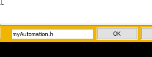
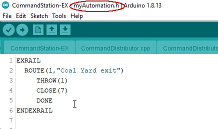

Creating Sequences


myAutomation.h - Editing Your Sequences
The script containing all your sequences is added to your Command Station by creating a file called “myAutomation.h” in the same folder as CommandStation-EX.ino.
Connecting your Arduino and pressing the Upload button in the usual way will save the file and upload your script into the Command Station.
You can create and edit the myAutomation.h using a text editor (like Notepad), but if you are using the Arduino IDE (rather than the EX‑Installer) you can create the myAutomation.h file in the Arduino IDE. Use the pulldown button and select New Tab (or simply press Ctrl+Shift+N).

Enter the file name “myAutomation.h” (This is case sensitive)
And type your script in.
The Automation Process
Note
There is an implied AUTOSTART whereby everything in myAutomation.h prior to the first DONE keyword is executed on startup. If you don’t wish anything to happen at startup, simply add the keyword DONE as the first line.
Once started, each ‘sequence’ will step through a list of simple keyword commands until they reach a DONE keyword.
There can be a startup sequence (keywords at the beginning of the script), which if present is automatically executed, as are any sequences that contain an AUTOSTART.
Multiple concurrent sequences are supported.
For a full list of keywords, see EX-RAIL Command Summary, and for further detailed information, see the EX-RAIL Command Reference.
Before You Start - Adding Objects
Generally you will need to have created some Key Objects before you start writing sequences.
Refer to the Adding Key Objects for creating and adding those Objects:
Roster Entries
Turnouts/Points
Sensors
Signals
Note that these Objects don’t have to be added before the sequence in which you use it.
Structure of a Sequence
In general, sequences follow the basic structure:
<sequence-type>( parameter1, paramerer2, ...)
<command 1>
<command 2>
...
<command n>
DONE or RETURN or FOLLOW ( id )
Sequence Types
Sequences are fall in the following broad groups:
Manually triggered
Triggered by another sequence
Triggered as a result of an event that has occurred on one of the turnouts/points, sensors, signals.
Manually Triggered Sequences
Manually triggered sequences take one of the following forms:
AUTOMATION( id, “description” )
...
DONE or FOLLOW ( id )
ROUTE( id, “description” )
...
DONE or FOLLOW ( id )
Note that these can also be invoked by other sequences.
Invoked Sequences
Sequences that can only be triggered by other sequences have the following form:
SEQUENCE( id )
...
DONE or RETURN or FOLLOW ( id )
Event Triggered Sequences
Sequences that are triggered when ‘events’ occur, have the following forms:
ONCLOSE( turnout_id )
...
DONE or RETURN or FOLLOW ( id )
ONTHROW( turnout_id )
...
DONE or RETURN or FOLLOW ( id )
ONACTIVATE( addr, sub_addr )
...
DONE or RETURN or FOLLOW ( id )
ONACTIVATEL( linear )
...
DONE or RETURN or FOLLOW ( id )
ONDEACTIVATE( addr, sub_addr )
...
DONE or RETURN or FOLLOW ( id )
ONDEACTIVATEL( linear )
...
DONE or RETURN or FOLLOW ( id )
See EX-RAIL Command Summary page for additional information on these sequence types.
Contents of a Sequence
A sequence is made up of commands, one per line. The commands fall into a few basic categories:
Commands that ‘do’ something
Commands that change the flow sequence that the commands are executed
Commands that change the timing of the execution of the commands
Informational commands
Command Station commands
Action Commands - Getting EX-RAIL to do ‘Things’
This type of command relates to the Objects of the system you have created and defined, like turnouts/points, signals, servos, turntables, blocks and locos.
There are a substantial number of commands that you can explore on the EX-RAIL Command Summary page. We will look at just a few here.
Turnout/Point commands include:
THROW( id ) - Throw a defined turnout
CLOSE( id) - Close a defined turnout
Signal commands include:
RED( signal_id ) - Set defined signal to Red (See SIGNAL)
AMBER( signal_id ) - Set a defined signal to Amber. (See SIGNAL)
GREEN( signal_id ) - Set a defined signal to GREEN (see SIGNAL)
Loco related include:
FWD( speed ) - Drive loco forward at DCC speed 0-127 (1=ESTOP)
REV( speed ) - Drive logo in reverse at DCC speed 0-127 (1=ESTOP)
SPEED( speed ) - Drive loco in current direction at DCC speed (0-127)
STOP - Set loco speed to 0 (same as SPEED(0) )
Turnout Commands include:
MOVETT( vpin, steps, activity ) - Move a turntable the number of steps relative to home, and perform the activity (refer EX-Turntable documentation)
See EX-RAIL Command Summary page for additional commands.
Sequence Flow / Flow Control Commands
For a simple sequence, once triggered the system steps though each and every instruction as quickly as possible until it hits DONE at the end of the sequence.
However there are a number of ways that the processing of a sequence can be changed:
Conditionals
CALL - Branch to a separate sequence expecting a RETURN
RETURN - Return to caller (see CALL)
FOLLOW - Branch or Follow a numbered sequence (think of “GOTO”)
The timing of the execution of the commands can be altered as well with ‘Delay’ type commands.
Conditionals
If a conditional is encountered, the following (enclosed) commands are only executed if the specified conditions are met.
Conditionals have the structure:
...
IFxxx( id_or_condition, ... ) // where xxx is the type of 'IF' command (see below)
<commands to execute if the conditions are met>
...
ENDIF
...
or
...
IFxxx( id, ...) // where xxx is the type of 'IF' command (see below)
<commands to execute if the conditions are met>
...
ELSE
<commands to execute if the conditions are NOT met>
...
ENDIF
...
Types of Conditionals
Sensor Related Conditional:
IF( sensor_id )
IFNOT( sensor_id )
IFGTE( sensor_id, value )
IFLT( sensor_id, value )
Turnout/Point Related Conditionals:
IFTHROWN( turnout_id )
IFCLOSED( turnout_id )
Signal Related Conditionals:
IFRED( signal_id )
IFAMBER( signal_id )
IFGREEN( signal_id )
Other Conditionals:
IFRANDOM( percent )
IFRESERVE( block )
IFTIMEOUT
see EX-RAIL Command Summary page for additional information.
CALL and RETURN
Todo
CALL and RETURN
FOLLOW
Todo
FOLLOW
Delay Commands and Wait Commands
The timing of the execution of the commands can be altered as well with ‘Delay’ type commands.
There are a number of delay type commands that you can explore on the EX-RAIL Command Summary page. We will look at just a few here.
DELAY( delay ) - Delay a number of milliseconds
DELAYMINS( delay ) - Delay a number of minutes
DELAYRANDOM( min_delay, max_delay ) - Delay a random time between min and max milliseconds
AFTER( sensor_id ) - Waits for sensor to trigger and then go off for 0.5 seconds, use negative values for active HIGH sensors
WAITFOR( pin ) - Wait for servo to complete movement
Informational Commands
Todo
Informational Commands
Command Station Commands
Todo
Command Station Commands
Referencing Key Objects in Sequences
Referencing Turnouts/Points
EX‑CommandStation supports a number of different turnout/point hardware configurations, but your automation treats them all as simple ID numbers. Turnouts may be defined using <T> commands from JMRI, or in SETUP("<T ...>") commands placed in your mySetup.h file, or C++ code in mySetup.h, just like earlier versions.
You may, however, find it more convenient to define turnouts/points using EX-RAIL commands, which may appear anywhere in the ‘myAutomation.h’ file, even after they are referenced in an ONTHROW, ONCLOSE, THROW or CLOSE command. (EXRAIL extracts the turnout definitions just once from your script at Command Station startup.)
Turnouts/Points defined in ‘myAutomation.h’ will still be visible to WiThrottle and JMRI in the normal way.
A TURNOUT command sends DCC signals to a decoder attached to the track, a PIN_TURNOUT sends a “throw” or “close” (5V or 0V signal) to a pin on the Arduino, and a SERVO_TURNOUT sends an I2C serial command to a servo board connected to your servos.
See the EX-RAIL Command Summary page for TURNOUT, PIN_TURNOUT and SERVO_TURNOUT definitions.
Referencing Signals
Signals can now simply be a decoration to be switched by the route process; they don’t need to control anything.
GREEN(55) would turn signal 55 green, and RED(55) would turn it red. Somewhere in the script there must be a SIGNAL command like this: SIGNAL(55,56,57). This defines a signal with ID 55, where the Red/Stop lamp is connected to pin 55, the Amber/Caution lamp to pin 56, and the Green/Proceed lamp to pin 57. The pin allocations do not need to be contiguous, and the red pin number is also used as the signal ID. Thus you can change the signal by RED(55), AMBER(55), or GREEN(55). This means you don’t have to manually turn off the other lamps. A RED/GREEN only signal may be created with a zero amber pin.
Referencing Locos
Todo
Referencing Locos in Sequences
Referencing Loco Functions
Todo
Referencing Loco Functions in Sequences
You can use FON(n) and FOFF(n) to switch loco functions… eg sound horn.
Referencing Sensors
EX‑CommandStation allows for sensors that are Active Low or Active High. This is particularly important for IR sensors that have been converted to detect by broken beam, rather than reflection. By making the sensor number negative, the sensor state is inverted. e.g.
AT(-5).Magnetic/Hall effect sensors work for some layouts, but beware of how you detect the back end of a train approaching the buffers in a siding, or knowing when the last car has cleared a crossing.
Handling sensors in the automation is made easy because EX-RAIL throws away the concept of interrupts (“oh… sensor 5 has been detected… which loco was that and whatever do I do now?”) and instead has the sequences work on the basis of “do nothing, maintain speed until sensor 5 triggers, and then carry on in the script”.
Sensor numbers are direct references to VPINs (virtual pin numbers) in the Hardware Abstraction Layer. For a Mega onboard GPIO pin, this is the same as the digital pin number. Other pin ranges refer to I/O expanders etc.
Sensors with ID’s 0 to 255 may be LATCHED/UNLATCHED in your script. If a sensor is latched on by the script, it can only be set off by the script… so
AT(5) LATCH(5)for example effectively latches the sensor 5 on when detected once.Sensor polling by JMRI is independent of this, and may continue if
<S>commands are used.
Outputs
Todo
HIGH - Outputs - what is this?
Generic Outputs are mapped to VPINs on the HAL (as for sensors)
SIGNAL definitions are just groups of 3 Output pins that can be more easily managed.
Drive-Away feature
EX-RAIL can switch a track section between programming and mainline.
Here for example is a launch sequence that has no predefined locos but allows locos to be added at station 1 while the system is in motion. Let’s assume that the track section at Station1 is isolated and connected to the programming track power supply. Also that we have a “launch” button connected where sensor 17 would be and an optional signal (i.e. 3 LEDs) on the control panel connected where signal 27 would be.
SEQUENCE(99)
SIGNAL(27,28,29)
RED(27) // indicate launch not ready
AFTER(17) // user presses and releases launch button
UNJOIN // separate the programming track from main
DELAY(2000)
AMBER(27) // Show amber, user may place loco
AFTER(17) // user places loco on track and presses “launch” again
READ_LOCO // identify the loco
GREEN(27) // show green light to user
JOIN // connect prog track to main
START(12) // send loco off along route 12
FOLLOW(99) // keep doing this for another launch
The READ_LOCO reads the loco address from the PROG track and the current route takes on that loco. By altering the script slightly and adding another sensor, it’s possible to detect which way the loco sets off and switch the code logic to send it in the correct direction by using the INVERT_DIRECTION instruction so that this locos FWD and REV commands are reversed. (easily done with diesels!)
Comments in in myAutomation.h
You can add comments (text that does nothing) to myAutomation.h in two ways:
If
//occurs in the line, everything after that (including the slashes) is ignored. i.e. a ‘Comment’If a line starts with
/*then everything, including all subsequent lines an including the ‘/’) is ignored until a ``/`` is found. i.e. a ‘Comment’